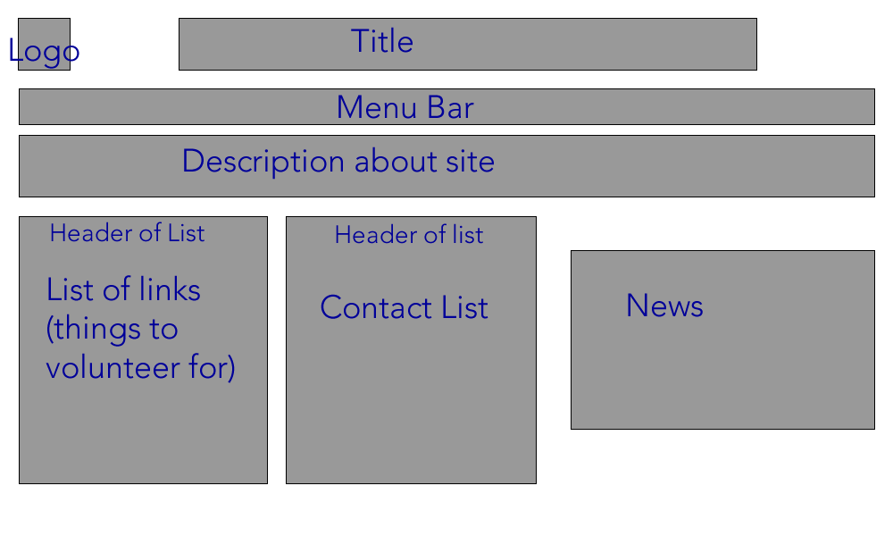

<h3> the homepages i have made </h3>
<ul>
  <li><a href="htdocs/index.FW.htm">Fireworks version</a></li>
  <li><a href="htdocs/index-DW.html">Dreamweaver version</a><li>
  </ul>

<h1>Wireframe </h1>



<h1>Storyboard</h1>


<h1>Compare and contrast DW vs FW </h1>
<h2>Good things about FW</h2>
<ul>
<li>Could make shape and lines easily</li>
<li> Could easily fill the shape in color </li>
</ul>
<h1>BUT</h1>
<ul>
<li>Was kind of difficult to cut the images </li>
<li>


